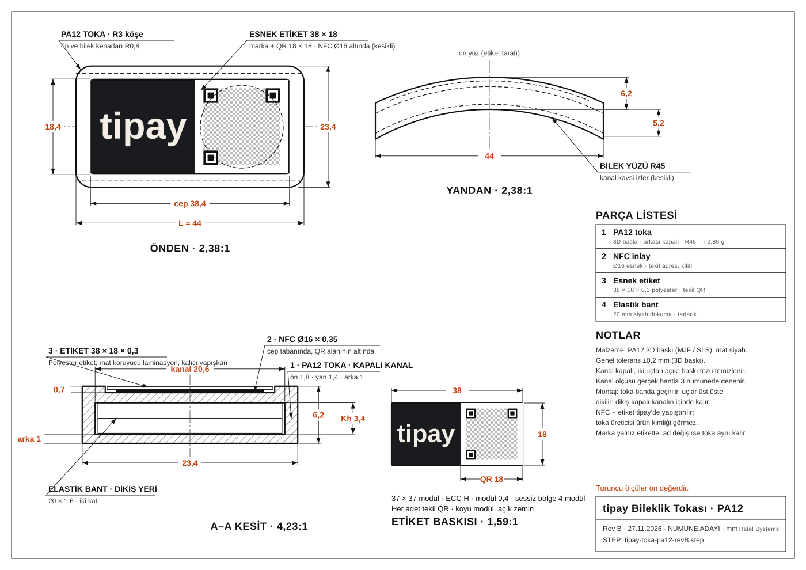

← 3D model
tipay Bileklik Tokası · PA12 · Rev B
Numune adayı · ölçüler bant tedarikçisinin gerçek ölçüsüyle ve 3 numunede kesinleşir
Arkası kapalı kanal: bant tokanın içinden geçer, dikiş içeride kalır. Bilek yüzü R45 kavisli. Ön yüzde 38 × 18 mm esnek etiket (marka + tekil QR) ve altında Ø16 NFC. PA12, endüstriyel 3D baskı (MJF / SLS), mat siyah boyalı.
| Dış ölçü | 44 × 23,4 × 6,2 mm · uç sehimi 5,2 mm |
| Kapalı kanal | 20,6 × 3,4 mm · 20 mm bant |
| Tahmini kütle | ≈ 2,86 g |
| Adet | 3 numune → 100 adet ilk parti |
